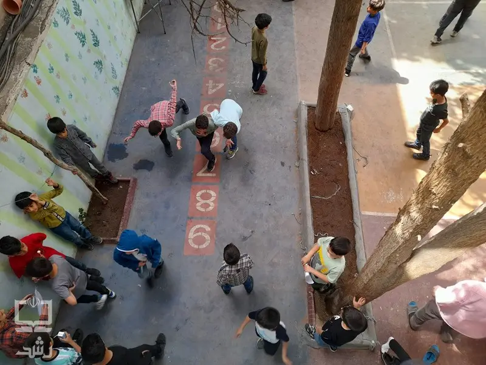

برنامهمحوری بهجای کتابمحوری
ملاک موفقیت، کسب شایستگیهای مشخصشده در برنامه درسی است، نه تمامکردن کتاب. کتاب در کنار دیگر محتواها و منابع، به کسب این شایستگیها کمک میکند.
زیستبوم جدید برنامه درسی، برنامه تحولی وزارت آموزشوپرورش برای ایجاد تغییرات اساسی در برنامههای درسی، محتواها و کتابهای درسی است. این برنامه بر پایه سند تحول بنیادین آموزشوپرورش، برنامه درسی ملی و دیگر اسناد بالادستی طراحی و تدوین شده و از مطالعات، پژوهشها و تجربههای حرفهای در سطوح مختلف بهره گرفته است.
زیستبوم جدید برنامه درسی، فراتر از تغییر محتوای کتابها، مسیر حرکت از کتابمحوری به برنامهمحوری را فراهم میکند. این زیستبوم، عوامل مختلف برنامه درسی را در کنار هم و در ارتباطی جامع و منسجم سامان میدهد تا مدرسه، نقشه ملی تربیت و یادگیری را بهتر بشناسد و بداند چگونه آن را در عمل اجرا کند.
زیستبوم جدید با ارائه منابع آموزشی، راهنماهای کاربردی و پشتیبانی اجرایی، به مدارس کمک میکند تا «نقشه ملی تربیت و یادگیری» را عمیقتر بشناسند و متناسب با ظرفیتهای بومی خود، در مسیر اهداف مشترک ملی گام بردارند.
هفت عامل مؤثر در تربیت، در ارتباط با یکدیگر
ملاک موفقیت، کسب شایستگیهای مشخصشده در برنامه درسی است، نه تمامکردن کتاب. کتاب در کنار دیگر محتواها و منابع، به کسب این شایستگیها کمک میکند.
مدرسه و معلم در چارچوب برنامه درسی، فعالیتهای یادگیری را طراحی و منابع و روشهای مناسب را انتخاب میکنند. راهنمای عمل، بستههای یادگیری و پشتیبانی علمی، پشتوانه آنهاست.
از کلاس درس تا اردو و زنگ تفریح، همه فعالیتهای مدرسه در برنامهای منسجم به هم پیوند میخورند تا در کنار یکدیگر به رشد همهجانبه دانشآموز کمک کنند.
اهداف مشترکاند، اما مسیر یادگیری با نیازهای دانشآموزان و شرایط بومی مدرسه هماهنگ میشود. معلم نیز روشها، منابع و زمان آموزش را متناسب با تفاوتهای فردی تنظیم میکند.
در زیستبوم جدید، دیگر تمام کردن کتاب معیار موفقیت معلم نیست؛ معلم موفق کسی است که مطمئن شود دانشآموزان به شایستگیها و اهداف مورد انتظار برنامه رسیدهاند، حتی اگر بخشی از کتاب درسی را تدریس نکرده باشد.
ما در زیستبوم جدید برنامه درسی به مدرسه کمک میکنیم نقشه ملی تربیت و یادگیری را عمیقتر بشناسد و آن را متناسب با نیازهای دانشآموزان و شرایط خود، به برنامهای عملی تبدیل کند. برای همراهی مدرسه در این مسیر، سه خدمت کلیدی طراحی کردهایم که ارکان اصلی زیستبوم را تشکیل میدهند:
ترجمهای از برنامه درسی ملی برای اجرا در مدرسه است که اهداف و انتظارات یادگیری، دامنه محتوا و چارچوب برنامهها و فعالیتهای هر دوره و پایه تحصیلی را بهصورت یکپارچه و با جزئیات روشن در اختیار مدرسه قرار میدهد. این راهنما به مدرسه کمک میکند اهداف برنامه درسی ملی را به برنامهها و فعالیتهای قابل اجرا تبدیل کند.
دانلودمجموعهای از منابع و مواد آموزشی است که در کنار کتابهای درسی، نمونههای متنوعی از فرصتهای تربیت و یادگیری را همراه با آموزش شیوه استفاده از آنها در اختیار مدرسه قرار میدهد. این منابع به مدرسه کمک میکنند فرصتهای متنوعی برای تربیت و یادگیری در مسیر تحقق اهداف برنامه درسی فراهم کند.
ورود به سامانه همیار معلمنظامی برای پشتیبانی از اجرای درست برنامه درسی در مدرسه است که با توانمندسازی عوامل مدرسه و مشارکت سطوح مختلف آموزش و پرورش، زمینه استقرار آن را فراهم میکند. همچنین با رصد اجرا و دریافت بازخورد، به اصلاح برنامه و پشتیبانی بهتر از مدرسه کمک میکند.
ورود به سامانه حامیکتاب درسی همان «برنامه درسی» تلقی میشود؛ هرچه در کتاب آمده باید تدریس شود و مطالب خارج از آن، اضافی یا غیرضروری به شمار میروند.
کتاب درسی یکی از ابزارهای دستیابی به شایستگیها و انتظارات برنامه است. معلم میتواند از رسانهها و منابع دیگری نیز استفاده کند که با اهداف، انتظارات و دامنه محتوای تعیینشده در «راهنمای عمل برنامه درسی مدرسهای» متناسب باشند.
معلم، مجری و مصرفکننده محتوای کتاب درسی است و مطالب آن را به دانشآموزان منتقل میکند. خلاقیت او به چگونگی انتقال محتوا محدود میشود.
معلم بر اساس انتظارات برنامه، موقعیتهای متنوع یادگیری را طراحی و تولید میکند. کتاب درسی یکی از منابعی است که در این مسیر به او کمک میکند.
تدریس همه صفحات کتاب تا پایان سال، معیار اصلی موفقیت معلم و انجام وظیفه اوست.
موفقیت معلم در این است که اطمینان یابد دانشآموزان به شایستگیها و انتظارات برنامه دست یافتهاند؛ حتی اگر برای این منظور، همه صفحات کتاب تدریس نشوند یا منابع دیگری به کار گرفته شوند.
پیوند میان دروس، فعالیتهای داخل و خارج کلاس و برنامههای آموزشی و پرورشیِ معاونتهای مختلف، محدود و غیرهدفمند است.
دروس و فعالیتهای آموزشی و پرورشی، در داخل و خارج کلاس، در قالب برنامهای یکپارچه و در ارتباط با یکدیگر طراحی میشوند تا به تحقق اهداف، انتظارات عملکردی و شایستگیهای مشترک کمک کنند.
تناسب حجم محتوای کتاب با زمان آموزش، بر اساس تراکم مفاهیم، مهارتها و ارزشهای کتاب و زمان پیشبینیشده برای تدریس آنها تعیین میشود.
مبنای تعیین حجم و زمان آموزش، اهداف، شایستگیها، انتظارات عملکردی و دامنه مفاهیم در راهنمای عمل است. کتاب درسی مجموعهای از موقعیتهای یادگیری پیشنهادی برای تحقق این انتظارات است.
زمانبندی بر اساس صفحات کتاب تنظیم میشود؛ برای مثال، «باید تا فلان ماه به صفحه ۴۰ برسیم». زمان آموزش تابع پیشروی در کتاب است.
معلم زمان آموزش را با نیاز و سرعت یادگیری دانشآموزان هماهنگ میکند. او میتواند به مفهومی که در برنامه اهمیت بیشتری دارد، زمان بیشتری اختصاص دهد؛ حتی اگر از زمانبندی تدریس کتاب عقب بماند.
ارزشیابی برای سنجش حفظیات و اطلاعات کتاب طراحی میشود و پرسشها مستقیماً از متن آن طرح میشوند.
ارزشیابی، میزان دستیابی دانشآموزان به انتظارات برنامه را میسنجد. معلم میتواند از آنها بخواهد پروژهای انجام دهند، مسئلهای را حل کنند یا مفهومی را در موقعیتی جدید به کار بگیرند.
دانشآموزان با تواناییهای متفاوت و مدارس مناطق محروم و برخوردار، همگی مسیر یکسان کتاب درسی را طی میکنند. مبنای آموزش و شیوه سنجش برای همه یکسان است.
برنامه درسی، شایستگیهای مورد انتظار را مشخص میکند و مدرسه مسیر دستیابی به آنها را متناسب با شرایط محیطی و محلی خود طراحی میکند. معلم نیز برای دانشآموزانی که زودتر به انتظارات میرسند، فعالیتهای غنیتر و برای کسانی که به تمرین بیشتری نیاز دارند، روشها و منابع سادهتری در نظر میگیرد. همه این مسیرها به سوی انتظارات مشترک برنامه هدایت میشوند.
برنامه درسی به جدول هفتگی دروس و ساعات تدریس کتابها محدود میشود و مبنای عمل، پُرکردن این ساعات است.
برنامه درسی در قالب «راهنمای عمل برنامه درسی مدرسهای»، همه فرصتهای حضور دانشآموز در مدرسه را پوشش میدهد و هدفمند میکند؛ از کلاس درس تا زنگ تفریح، نماز، اردو و فعالیتهای تربیتی و مهارتی.
راهنمای عمل معلم، دستورالعمل تدریس کتاب درسی است و بیشتر بر چگونگی انتقال محتوا تمرکز دارد.
راهنمای عمل، چارچوبی برای همه اعضای تیم مدرسه، شامل مدیر، معاون، معلم و مربی، فراهم میکند تا موقعیتهای مناسب برای تربیت دانشآموزان در ابعاد مختلف را طراحی کنند.

خیر. کتابهای درسی همچنان از منابع مهم تربیت و یادگیریاند. معلمان میتوانند در چارچوب اهداف و انتظارات برنامه درسی، از منابع، رسانهها و فعالیتهای دیگر هم استفاده کنند.
مدارس در چارچوب اهداف و انتظارات مشترک ملی، اختیار بیشتری برای تصمیمگیری و برنامهریزی خواهند داشت. هر مدرسه میتواند فرصتهای تربیت و یادگیری را متناسب با شرایط بومی، ظرفیتها و نیازهای دانشآموزان انتخاب کند، تطبیق دهد یا طراحی کند. اهداف مشترکاند، اما مسیر رسیدن به آنها میتواند متفاوت باشد.
معلم در انتخاب و طراحی فرصتهای تربیت و یادگیری نقش فعالتری دارد. او با شناخت اهداف و انتظارات برنامه و نیازهای دانشآموزان، از منابع متنوع استفاده میکند و فعالیتهای مناسب را انتخاب میکند، تطبیق میدهد یا طراحی میکند.
تمامکردن کتاب بهتنهایی معیار موفقیت نیست. پیشرفت دانشآموزان در کسب شایستگیها و رسیدن به انتظارات یادگیری اهمیت دارد. انتخاب محتوا و منابع و زمانبندی آموزش باید تابع اهداف و الزامات برنامه درسی باشد، نه صرفاً ترتیب صفحات کتاب.
این زیستبوم برای دوره اول ابتدایی طراحی شده و در اسناد طرح، اجرای آزمایشی آن بهصورت محدود در پایه اول پیشبینی شده است. زمان اجرای گسترده، مدارس مشمول و جزئیات اجرا باید بر اساس آخرین برنامهها و اطلاعیههای رسمی طرح مشخص شود.
تحول در برنامه درسی، مسیری است که شناخت، گفتوگو و مشارکت آگاهانه معلمان و عوامل مدرسه در آن اهمیت دارد. آشنایی دقیقتر با اهداف، چارچوبها و شیوه اجرای زیستبوم جدید، زمینهای فراهم میکند تا هر مدرسه نقش خود را در این تحول بهتر بشناسد.
از شما دعوت میکنیم با مطالعه اسناد و جزئیات طرح، شناخت عمیقتری از این مسیر پیدا کنید و پرسشها، تجربهها و دیدگاههای خود را درباره فرصتها و چالشهای آن با ما در میان بگذارید.